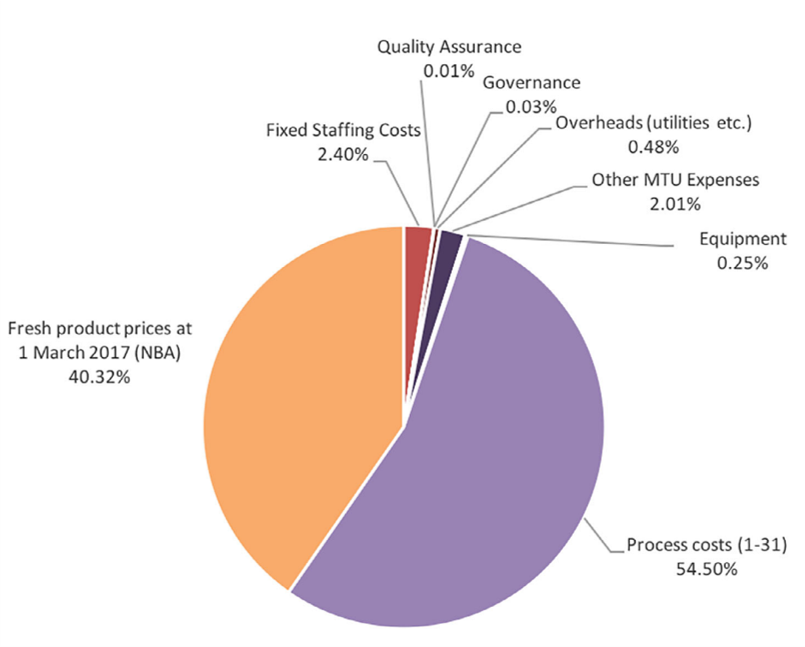

No estudo, McQuilten et al (2019), os autores observaram que os custos com aquisição de produtos/hemocomponentes, ou seja, os custos diretos, corresponderam a cerca de 40% das transfusões (em laranja), enquanto os outros cerca de 60%, estiveram relacionados aos custos indiretos (em roxo, preto e vermelho).